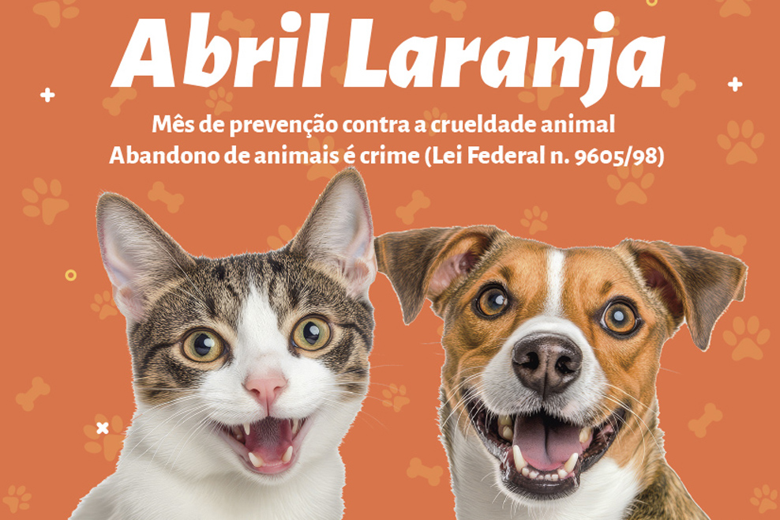

| 🧡 Abril Laranja: mês de combate à crueldade contra os animais | |
|---|---|
| O Abril Laranja é uma campanha dedicada à conscientização sobre a importância de proteger os animais e combater qualquer forma de maus-tratos. Durante esse mês, diversas organizações, ativistas e pessoas engajadas se mobilizam para informar a população sobre os direitos dos animais e incentivar atitudes mais responsáveis e empáticas. | |
